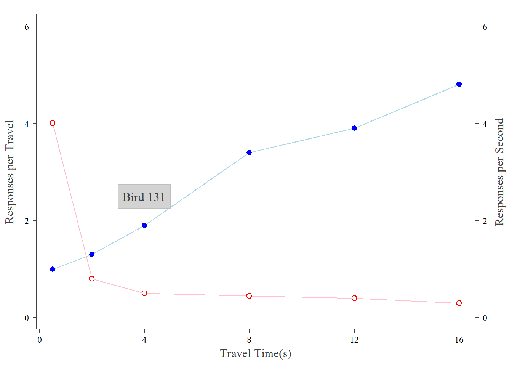

# Scatterplot
x <- c(0.5, 2, 4, 8, 12, 16) #x is the travel times
y1 <- c(1, 1.3, 1.9, 3.4, 3.9, 4.8) #y1 is the responses per seecond
y2 <- c(4, .8, .5, .45, .4, .3) #y2 is the responses per travel
#https://www.rdocumentation.org/packages/graphics/versions/3.6.2/topics/
par(
las = 1, #las - label styles (0 = always parallel, 1 = always horizontal, 2 = always perpendicular, 3 = always vertical )
mar = c(5,5,2,5), #controls the margins on each side of the display box. 1 = , 2 = , 3 = , 4 =
mgp = c(5, 1, 0), #controls labels in the margins. 1st value = axis title distance, 2nd value = tick mark distance, 3rd value = axis
cex = .5 #controls the size of the points
)
plot.new()
plot.window(
range(x) #controls the possible values on the x-axis. this sets it equal to the x values
, c(0,6) #controls the possible values on the y-axis.
)
par(
#col="blue", #controls plot color (points and lines) -- this command didn't work when I tried to graph the lines and points below. I had to call out the color for each element.
fg="grey25", #this changes the colors of the the axes and labels
col.axis="black" #this changes the color of the tick labels
)
lines(x, y1, col = "lightblue")
lines(x, y2, col = "pink")
points(x, y1, pch=16, cex=2, col = "blue") #pch changes the display mark, and cex changes the size of the display mark.
points(x, y2, pch=21, col = "red", bg="white", cex=2) #bg changes the background color in the filled icons.
#https://www.rdocumentation.org/packages/graphics/versions/3.6.2/topics/Axis
axis(
1, #this is the axis you are working with 1 = bottom, 2 = left, 3 = top, 4 = right
at=seq( #tells where to put the tick marks
0, #starting point
16, #ending point
4 #intervals
),
cex.axis = 1.5,
family ="serif"
)
axis(2, at=seq(0, 6, 2), cex.axis = 1.5, family = "serif")
axis(4, at=seq(0, 6, 2),cex.axis = 1.5, family = "serif")
box(bty="u") #draws a box around the graph
# bty="o" - Open box (all 4 sides) - this is the default
# bty="l" - L shape (left and bottom only)
# bty="7" - Looks like a 7 (top and right only)
# bty="c" - C shape (top, left, bottom - no right)
# bty="u" - U shape (left, bottom, right - no top)
# bty="]" - Right bracket (top, right, bottom - no left)
# bty="n" - None (no box at all)
#https://www.rdocumentation.org/packages/graphics/versions/3.6.2/topics/mtext
mtext(
"Travel Time(s)", #text
side= 1, #what side you're labeling. 1 = bottom, 2 = left, 3 = top, 4 = right
line=3, #where to place it in the margin
las = 1, #rotation of the label. See above.
cex= 1, #size of text
family= "serif"
)
mtext("Responses per Travel", side=2, line=3, las=0, cex=1, family = "serif")
mtext("Responses per Second", side=4, line=3, las=0, cex=1, family = "serif")
rect(3, 2.25, 5, 2.75, col = "lightgrey", border = "grey")
text(4, 2.5, "Bird 131", cex=2, family = "serif")